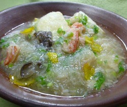

揚げもちのカブあんかけ
- 調理時間：30 分
- （一人当たり）
- カロリー：404kcal
- たんぱく質：10.5g
- 脂質：61.5g
- 塩分：1.2g


＜２人分＞
- カニ（ほぐし身）
- 60g
- しめじ
- 40g
- カブ
- 3個
- カブの葉
- 大さじ3
Ａ
- ・だし汁
- 200ml
- ・料理酒
- 大さじ1
- ・みりん
- 小さじ1
- ・醤油（薄口）
- 大さじ1/2
- 水溶き片栗粉
- 適量
- 塩
- 少々
- 切りもち
- 3～4個
- 揚げ油
- 適量
- 柚子の皮
- 少々


- カブは皮をむいてくし切りにする。しめじは石づきをとり手でほぐす。カブの葉は1㎝幅に切る。
- Ａをなべに入れて煮立て、カブ、しめじ、カニを入れる。
水溶き片栗粉で、ゆるめにとろみを付ける。
最後にカブの葉を加える。塩で味をととのえる。 - 切りもちは２つに切って、１６０℃の油で揚げる。
- 揚げもちを器に盛り、その上からあんをかける。柚子の皮を散らす。
揚げもちのカブあんかけ
おもちは消化が悪いとか、少量でカロリーが高いとかネガティブな声も聞きますが、見方を変えると優れた食品に一変します。
例えば、おもちはアスリートの試合前のエネルギー補給にもすすめられています。消化がゆっくりなので腹持ちがよく手軽に食べられることも利点でしょう。また、ごはんに比べると少量で炭水化物の補給になります。特に、持久力が必要なマラソンなどは炭水化物をしっかり補給しておくことが大切です。ちなみに、炭水化物が足りないと、たんぱく質の合成がうまくいかず筋肉を減らしてしまう原因にもなります。その他、腹持ちがよいので間食が減り、ダイエット効果も期待できます。
食べあわせの術として、おもちは炭水化物が主成分なので代謝に関わるビタミンB1 を含む納豆やカツオ節と合わせたり、消化を促すジアスターゼを含む大根おろしやカブが添えられるとよいですね。